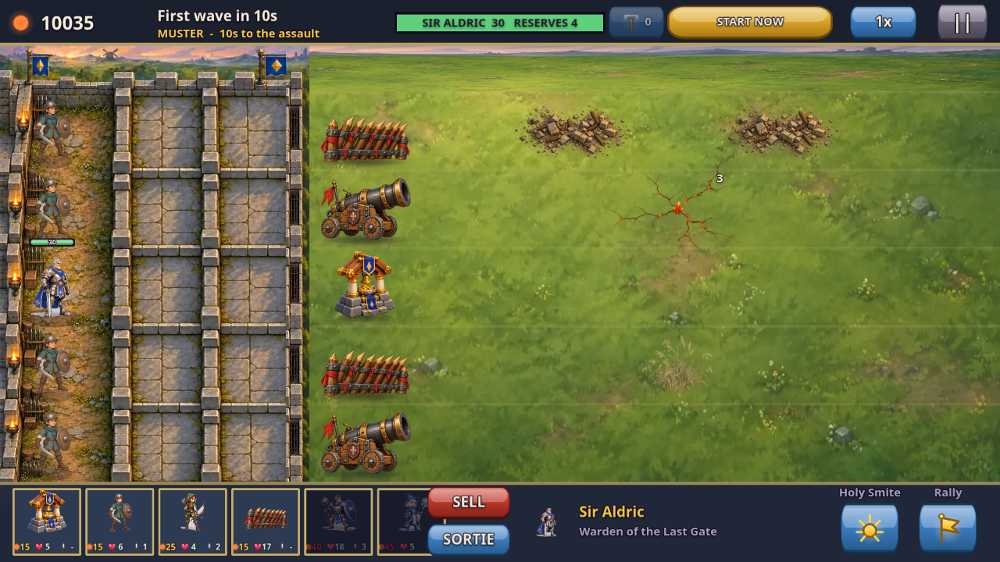
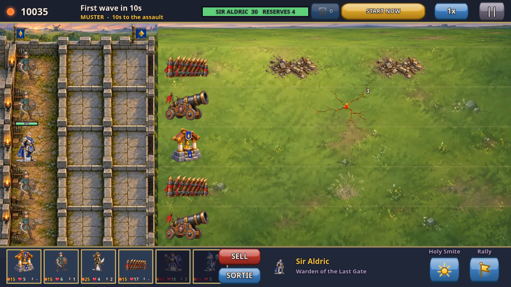

Regional battlefield integration
Regional materials and light now connect buildings and terrain to their surroundings. Solid building bases meet the ground, with soft contact shadows and worn surfaces. Coast and throne paintings now leave the playable field clear for the actual terrain map.


BeforeAfterBuilding bases are aligned using visible artwork, with trampled soil, grass, and warm light shared by the field and terrain.
Same level and placement cells on both sides. Five-lane placement and combat rules are retained. Design and validation notes